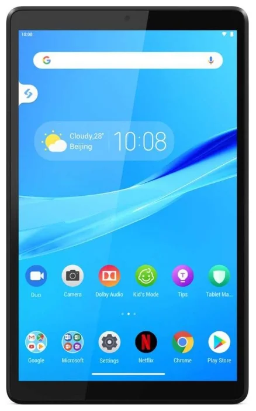

Планшет Lenovo Tab

Описание товара
Планшет Lenovo Tab M8 TB-8505F 32Gb (2019), Iron Grey
Подробное описание товара
Планшет Lenovo Smart Tab M8 сочетает в себе широкие возможности мобильных развлечений и удобство управления «умным домом». Этот изящный 8-дюймовый планшет впечатляет превосходным дизайном, высокой скоростью соединения и расширенными мультимедийными возможностями, такими как поддержка Dolby Atmos®. Подключите его к Smart Charging Station и откройте для себя целый мир новых возможностей с режимом Ambient Mode Google Assistant.
Характеристики
- Система
- Операционная система на начало продаж Android 9.0
- Процессор MediaTek Helio A22 2000 МГц
- Частота процессора 2000 МГц
- Количество ядер 4
- Вычислительное ядро Cortex-A53
- Техпроцесс 12 нм
- Объем встроенной память 32 ГБ
- Оперативная память 2 ГБ LPDDR3
- Слот для карт памяти есть, microSDXC, до 128 ГБ
- Экран
- Экран 8", 1280x800
- Широкоформатный экран да
- Тип экрана IPS, глянцевый
- Сенсорный экран емкостный, мультитач
- Число пикселей на дюйм (PPI) 189
- Видеопроцессор PowerVR GE8320
- Беспроводная связь
- Поддержка Wi-Fi есть, Wi-Fi 802.11ac, WiFi Direct
- Поддержка Bluetooth есть, Bluetooth 5.0
- Фотокамера
- Количество основных (тыловых) камер 1
- Разрешение основной (тыловой) камеры 5 МП
- Особенности камеры автофокус
- Фронтальная камера есть, 2 МП
- Звук
- Встроенный динамик есть, звук моно
- Встроенный микрофон есть
- FM-тюнер есть
- Функциональность
- GPS есть
- ГЛОНАСС есть
- Автоматическая ориентация экрана есть
- Датчики акселерометр
- Поддержка форматов
- Аудио AAC, WMA, WAV, OGG, FLAC, APE, MP3
- Видео MPEG-4, WMV, MKV, H.264, MOV, MP4
- Подключение
- Тип разъема для зарядки micro-USB
- Подключение к компьютеру по USB есть
- Подключение внешних устройств по USB опционально
- Выход аудио/наушники есть, mini jack 3.5 mm
- Питание
- Время работы 12 ч
- Время зарядки аккумулятора 3.3 ч
- Емкость аккумулятора 5000 мА⋅ч
- Размеры и вес
- Размеры (ДхШхГ) 199.1x121.8x8.15 мм
- Вес 305 г
- Дополнительная информация
- Материал корпуса пластик
- Комплектация:
- планшет;
- кабель;
- сетевой адаптер;
- инструкция.
- Стилус в комплекте нет
- Дополнительно
- Гарантийный срок 1 г.
- Страна производства Китай
Все права защищены©